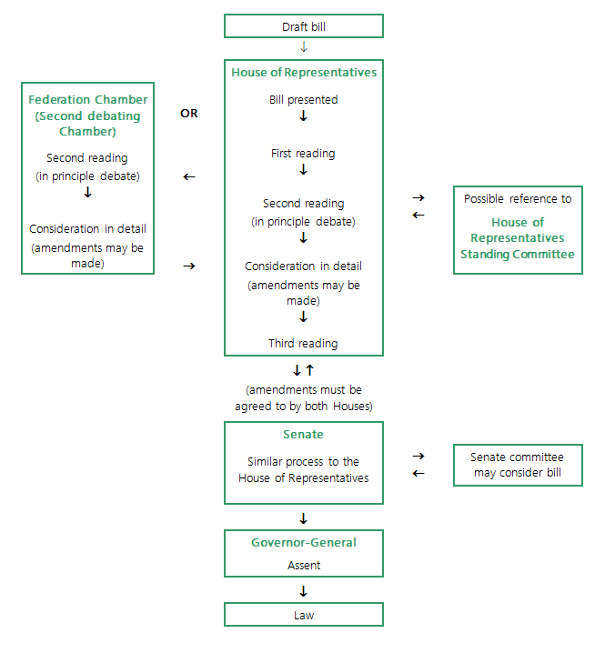

-random
Three Branches of Government
- Executive: The Governor-General (representative of the united kingdom monarch)
- Legislative: Parliament (house of representatives and senate)
- Judiciary: The High Court
Sources
https://peo.gov.au → Parliament of education
https://aph.gov.au → Parliament of Australia
Wikipedia
Cabinet Of Australia Constitutional Monarchy Parliamentary System Representative DemocracyDictionary
Abbreviations
- MP: Member of Parliament
- PM: Prime Minister
Law
The law is essentially a set of enforceable rules of conduct which set down guidelines for relationships between people and organizations in a society.
Government
The job to serve and improve the society they govern. Laws are made for the people of a society.
Constitution
All the rules written down on how to govern a country.
Act
A law.
Amendment
Changes to a law (act).
Corruption
Corruption is the abuse of power by people in authority for personal gain. It is dishonest and fraudulent behaviour.
Acts
Act Structure
Name
- Part I
- Division 1
- Section 1
- Section 2
- Section 3
- Division 2
- Subdivision 1
- Section 4
- Section 5
- Section 6
- Subdivision 2A
- Section 7A
- Section 7B
- Section 7C
- Subdivision 2B
- Section 8
- Section 9A
- Section 9B
- Division 3A
- Section 10
- Section 11
- Section 12
- Division 3B
- Section 13A
- Section 13B
- Part II
- Division 1
- Section 1
- Section 2
- Section 3
- Part III
- Division 1
- Section 1
- Section 2
- Section 3
- The Schedule (abbreviations)
- Endnote 1
- Endnote 2
- Endnote 3
Parliament
What is the Parliament?
The Australian Parliament is the central lawmaking body of the country. There are three key chambers working together.
- The Governor-General, representing the King.
- The Senate offers equal voice to each state and territory
- House of Representatives grants power based on population. Together, they create and amend laws, ensure the government serves the people's interests, and determine who leads the nation.
Levels Of Parliament

Federal Parliament
Responsible for issues that affect all Australians (national issues)
- Post, telephones and the internet
- Immigration
- Defense
State/Territory Parliaments
Responsible for issues that affect people in that state or territory
- Police
- Public transport
- Hospitals
Local Council
Issues that affect local communities
- Rubbish collection and recycling.
- Parks, sports fields and swimming pools
- Pet control
Cabinet
Most of the time ministers are/were part of parliament and they work two positions.
Prime Minister (PM)
The main person in charge who takes care of pretty much everything
Deputy Prime Minister
Prime Minister assistant. This position is not always filled, depending on the political circumstances and arrangements.
Ministers/Senior Ministers
The Prime Minister picks a team of about 20-25 ministers from Parliament (House of Representatives & Senate) to handle different areas of government (like health or education). These ministers are the government's experts and are in charge of making things happen in their specified area.
Ministry List
Prime Minister
Deputy Prime Minister
Minister for Defence
Minister for Foreign Affairs
Treasurer
Minister for Finance
Minister for Women
Minister for the Public Service
Minister for Trade and Tourism
Special Minister of State
Minister for Employment and Workplace Relations
Minister for the Arts
Minister for Health and Aged Care
Minister for Climate Change and Energy
Minister for the Environment and Water
Minister for Regional Development, Local Government and Territories
Minister for Indigenous Australians
Minister for Social Services
Minister for the National Disability Insurance Scheme
Minister for Government Services
Attorney-General
Cabinet Secretary
Minister for Skills and Training
Minister for Education
Minister for Housing
Minister for Homelessness
Minister for Small Business
Minister for Communications
Minister for Resources
Minister for Northern Australia
Minister for Agriculture, Fisheries and Forestry
Minister for Emergency Management
Minister for Industry and Science
Minister for Home Affairs
Minister for Cyber Security
Current Ministry List
Parliamentary Secretaries/Assistant Ministers/Junior Ministers
These are junior ministers who assist Cabinet Ministers and other senior ministers in their duties. They may have specific responsibilities within a portfolio or assist with broader government tasks.
Senate
The Senate is the higher house of Australia's bicameral Parliament.
The Senate is made up of 76 senators.
- 12 senators represent each state
- 2 senators represent each territory
What is the purpose of the senate?
What is a Senate Committee?
House Of Representatives
The House of Representatives is the lower house of Australia's bicameral Parliament.
How Laws Are Made
constitutional Monarchy
This is a mostly symbolic part of the political structure (UK). Basically the part where the UK has symbolic or cultural importance to Australia but it is represented as an actual legal part of the Australian parliament?
The Head Of State is above the Governor General and is basically the British monarchy and the Governor General is just a representative of those who can request/ask to add a rule or change something. (The Governor General is above the Prime Minister)
Lawyering
Civil VS Criminal
The line isn't clear but it is there between civil and criminal, the police decides and prosecutors assess and determine if the action falls under a criminal offence or civil dispute.
Criminal Offences:
If the act is considered a serious offence against the state (e.g., theft,
assault, fraud), it will likely be treated as a criminal case.
E.g Stealing a phone (punishment for breaking the law)
Civil Disputes:
If the act involves a disagreement or breach of contract between private parties (e.g., property damage, breach of contract), it will likely be a civil case.
E.g Someone borrows your phone and damages it (you sue to get money to fix it)
Types of Lawsuits
Civil Jurisdiction, Criminal Jurisdiction, Public Interest Judictrction
- Personal injury
- Product liability
- Medical malpractice
- Contract
- Family lawsuit
- Equitable claims
- Defamation
- Dispute resolution
- Tort
- Dog bite
- Evictions
- Family law
- Drug recall lawsuits
- Property damage
- Wrongful termination lawsuit
Civil Lawsuit Process
- Filing a lawsuit: The plaintiff (person bringing the case) files a claim with the appropriate court.
- Pre-trial procedures: Both parties may exchange evidence, participate in mediation to try to settle the case, and address any procedural matters with the judge.
- Trial: If no settlement is reached, a trial is held where witnesses are called, evidence is presented, and legal arguments are made.
- Judgement: The judge or jury delivers a verdict, deciding in favour of one party and potentially awarding remedies like damages or injunctions.
- Appeal: The losing party may appeal the decision to a higher court.
Contracts
What is a Contract?
A agreement between two parties.
Types of Contracts
Employment Contracts
Minimum Wage
The lowest salary allowed legally. This can differ from each job type and
Enterprise Contract
A contract for people who deserve more than minimum wage or won't work for minimum wage.
Common Law Contract
A special contract for overly outstanding people who deserve much higher pay.
Stages of contracts
Offer
Offering what the contract is about and what it outlines
Acceptance
Both parties agreeing to the contract.
Consideration
Both Parties following the contract.
Consumers
What are consumers?
People who buy goods & services to satisfy their needs and wants. The one consuming the product.
Definitions
Opportunity Cost
What a person gives up to satisfy a particular need or want, not necessarily money.
Comparison Shopping
When customers look around stores to find the best deal based on other factors like availability, location convenience etc.
Impulse Buying
Buying something instantly without thinking if you need it, in the heat of the moment.
E-Commerce
Online shopping.
Needs vs Wants
Needs
are things essential to survival. (E.g Food, Water)
Wants
things that are “prefered” but not required. (E.g Watch)
Goods vs Services
Good
Items you can be seen or touched.
- Durable - Products that can be used again and again. (E.g Phone)
- Non-Durable - Products that can only be used once. (E.g Chocolate bar)
Service
Things other people can do for you in exchange for money. (E.g Haircut)
Resources
Items used to produce goods and services
- Land - Refers to all natural resources.
- Labour - Physical and mental efforts of people working
- Capital - Equipment used to make goods.
- Enterprise - Combing other resources to make a profit
- Scarcity - When there aren't enough resources to meet consumers needs & wants
Types of Retail Stores
- Convenience/corner stores - Offer basic needs like food (e.g 7-Eleven)
- Specialty stores - Specialise in a particular type of product
- Department stores - Sell a large range of products and buy in bulk with great customer service. (e.g David Jones)
- Discount variety stores - Similar to department stores, Sell a large range with buying in bulk but usually don't have great interiors or customer service.
- Factory outlets - Stores where manufacturers sell stock directly to the public, rather than through retailers or wholesalers.
- Supermarkets - Sell a wide range of goods including food. (e.g ALDI)
Finance
Definitions
Disposable income
The amount of money you make after taking tax and fees. Money used for saving or spending
Direct Debit
When the bank automatically pays your fees for you (from your money).
Types of Payment
Cash
The normal currency people have used for centuries.
Credit Cards
The purpose of a credit card is to give its user money but they have to pay it back later, although if too late (after the required date) there would be 'late fees' which the company giving out the money requires to keep giving out money.
Debit Cards
Debit cards are where the user can deposit money into the account and keep the money in there without any.
Cheque
A cheque is a written order from a drawer requesting a drawee to pay a payee.e
Drawer: The person who draws the cheque, i.e. signs and orders the bank to pay the sum.
Drawee: The bank on which the cheque is drawn or who is directed to pay the specified sum written on the cheque.
Payee: The beneficiary, i.e. to whom the amount is to be paid.
Electronic Funds Transfer (EFP)
Electronic funds transfer is done using an EFTPOS machine or BPay. (Using cards in physical stores).
Investing
Definitions
Investing
The use of money for a profitable return.
Dividends
Payments from the business (shares)
Revenue
ETFs
EPS
Mutual Fund
P/E Ratio
D/E Ratio
52 Week Range
Market Cap
Value of all shares of a company combined
Types of Investment
- Shares
- Property